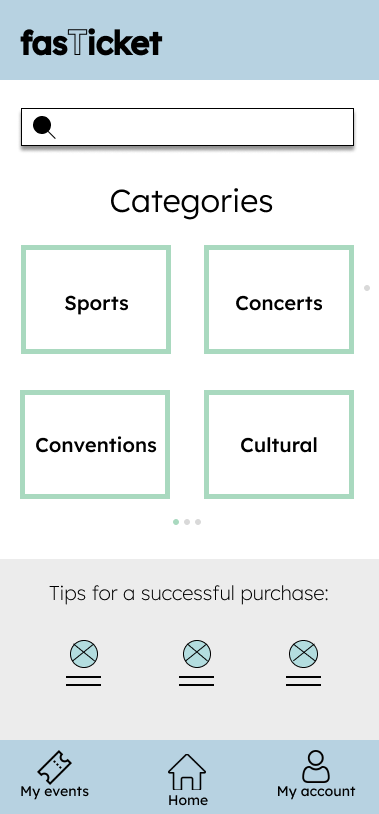
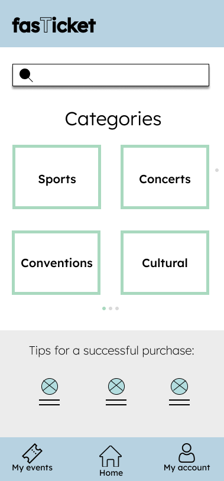
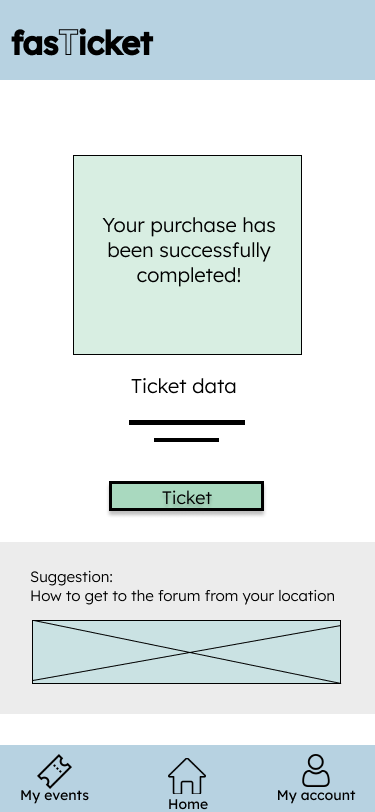
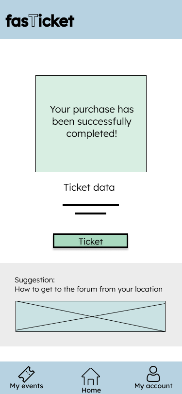

Hola, mi nombre es Fernanda Barrera
Soy diseñadora UX/UI
Mi propósito es diseñar interfaces modernas, agradables, funcionales y accesibles. Creo en la importancia de crear experiencias óptimas para el usuario, ya sea en sitios web o aplicaciones móviles. Soy diseñadora UX/UI con dos años de experiencia. Me apasiona utilizar nuevas tecnologías para dar vida a ideas y convertirlas en productos digitales efectivos. Busco contribuir en proyectos innovadores, colaborando con empresas que aspiren a construir soluciones de alto impacto.
Descargar CV Descargar certificadoInformación
Mi nombre es Fernanda Barrera Rodríguez
Comprender a los usuarios es parte fundamental para generar experiencias positivas y poder satisfacer sus necesidades.
Fecha de nacimiento 11 sep 2000
Edad 24 años
Email bafer45@yahoo.com.mx
Telefono 5614551851
Ciudad CDMX
Freelance Disponible
Figma
HTML
CSS/LESS
JS
Inglés
Educación
2020 - Actualmente
Ingeniería Biomédica - Universidad Autónoma Metropolitana
A lo largo de esta trayectoria he aprendido a usar diferentes programas como "Ise Design Suite" el cual es una herramientta de software diseñada para HDL diseños, hago uso de Matlab el cual sirve para programación y cálculo numérico, se usa para analizar datos, desarrollar algoritmos y crear modelos y el uso de circuitos eléctricos en diversas asignaturas empleados de diferentes maneras.
Mayo 2023 - Enero 2024
Diseñadora UX/UI - Coursera
Para comenzar a desarrolar un producto es necesario hacer previamente una investicación, el cual abarca hacer un estudio de usabilidad para conocer a los usuarios, esto nos ayudará para posteriormente realizar los bocetos y finalmnete los diseños para su implementación.
Experiencia
2018 -2024
Ambar Gym
Mi labor principal era atención al cliente, llevar la administración de cobro y seguimiento de los usuarios a través de Excel.
01 nov 2024 - 30 abril 2025
Diseñadora UX/UI - Secretaría de Educación Pública USICAMM
Participé en el rediseño de una nueva plataforma en Figma, con el objetivo de mejorar la experiencia del usuario, ya que la versión actual es poco intuitiva, desorganizada y contiene elementos innecesarios. Me encargué de rediseñar parte del flujo de navegación del home y de los perfiles tanto de autoridades educativas como del personal docente, permitiendo que cada usuario pudiera contar con su propia cuenta asimismo con la información necesaria para cada perfil. Adicionalmente, colaboré en tareas de diseño gráfico, elaborando infografías, banners, publicaciones y guías visuales para apoyar a los maestros durante el proceso de registro en las convocatorias.
Servicios
Diseño de interfaces (UI Design)
Creación de interfaces visuales atractivas, funcionales y adaptadas a diferentes dispositivos (responsive design).
Diseño de experiencia de usuario (UX Design)
Investigación, definición de flujos de usuario, arquitectura de la información y creación de wireframes orientados a mejorar la experiencia de uso.
Prototipado interactivo
Desarrollo de prototipos navegables para pruebas de usabilidad y validación con usuarios o equipos de desarrollo.
Rediseño y mejora de plataformas digitales
Optimización de sistemas o productos existentes para hacerlos más intuitivos, accesibles y eficientes.
Investigación con usuarios (UX Research)
Entrevistas, pruebas de usabilidad, encuestas y análisis de comportamiento para fundamentar decisiones de diseño.
Diseño gráfico complementario
Creación de materiales visuales como infografías, banners, publicaciones digitales y guías visuales para reforzar la comunicación del producto.
Portafolio
Sitio web y app de venta de boletos
Descripción del diseño
Este proyecto realizado en FIGMA es para que los usuarios eviten largas colas en los centros físicos en venta de boletos. Este estudio busca conocer qué tan fácil o difícil es realizar una compra para un evento, para saber cuáles son las primeras dificultades.
Responsabilidades
Realización de entrevistas, wireframing en papel y digital, creación de prototipos de baja y alta fidelidad, realización de estudios de usabilidad, accesibilidad, iteración de diseños y diseño responsivo.
Problema
Los sitios web de venta de entradas son un poco confusos e incluso te obligan a hacer la llamada cola virtual.
Meta
Diseñar un sitio web que le ahorre tiempo y le permita realizar una compra eficaz y segura.
Rol
Mi rol fue investigador y diseñador de interfaz UX.
Duración del proyecto
Mayo 2023-Enero 2024
Proceso del diseño
Wireframes a mano
Comencé el proceso de diseño esbozando wireframes en papel para cada pantalla principal. Esta etapa me permitió idear rápidamente varias soluciones, identificar los puntos de fricción en el flujo de usuario y tomar decisiones rápidas sin enfocarme aún en lo visual. Fue una herramienta clave para estructurar las funciones esenciales y validar las primeras ideas con los usuarios.
Wireframes digitales
A partir de los bocetos en papel, creé versiones digitales utilizando Figma. Esto facilitó la visualización del recorrido del usuario y permitió compartir el diseño con otras personas para obtener retroalimentación más clara. En esta fase comencé a organizar mejor el contenido y a definir los elementos interactivos de cada pantalla, sentando las bases para el prototipo funcional.
Prototipo de baja fidelidad
En esta etapa conecté todas las pantallas clave involucradas en el flujo principal del usuario: desde la selección del evento, elección de fecha y asiento, hasta la confirmación de la compra. El objetivo del prototipo de baja fidelidad fue validar la estructura general del diseño y la navegación antes de enfocarme en los detalles visuales. Me permitió detectar posibles confusiones tempranas y hacer ajustes rápidos antes de pasar a un prototipo más detallado.
.png) 



 

Estudio de Usabilidad
Para evaluar la efectividad del diseño, realicé un estudio de usabilidad con cinco participantes. Observé cómo navegaban por la interfaz y cuáles eran sus principales dificultades. Los hallazgos más relevantes incluyeron confusión con los botones y la falta de opciones para retroceder. Esta retroalimentación fue fundamental para iterar sobre el diseño y mejorar tanto la usabilidad como la experiencia general del usuario.
Prototipo de Alta Fidelidad
El prototipo de alta fidelidad fue una evolución directa del prototipo de baja fidelidad, integrando los hallazgos obtenidos del estudio de usabilidad. En esta versión, apliqué estilos visuales, colores, tipografías y jerarquías más definidas para simular la experiencia final del usuario. También incorporé mejoras en la interacción y accesibilidad, asegurándome de que el flujo de compra fuera claro, fluido y visualmente atractivo.


Aprendí que incluso un pequeño cambio de diseño puede tener un gran impacto en la experiencia del usuario. Lo más importante para mí es centrarme siempre en las necesidades reales del usuario al proponer ideas y soluciones de diseño.
App para solicitar paseador de perros
Descripción del diseño
Passdog es una aplicación móvil que permite a los usuarios solicitar un paseador de perros en el momento que lo necesiten. Está pensada para personas que no disponen del tiempo suficiente para sacar a pasear a sus mascotas, ofreciendo una solución práctica y confiable.
Responsabilidades
Durante el desarrollo del proyecto, realicé entrevistas con usuarios para entender sus necesidades, creé wireframes en papel y formato digital, y desarrollé prototipos de baja y alta fidelidad. También llevé a cabo pruebas de usabilidad, consideré criterios de accesibilidad e iteré el diseño según los resultados obtenidos. El diseño se enfocó exclusivamente en dispositivos móviles, ya que la mayoría de los usuarios utiliza su celular como el principal medio de acceso, sin importar el lugar en el que se encuentren.
Problema
Actualmente, existen pocas aplicaciones especializadas y confiables para pasear perros. Esta escasez representa una oportunidad para cubrir una necesidad real de muchos dueños de mascotas.
Meta
Diseñar una aplicación funcional e intuitiva que permita a los dueños de mascotas contratar paseadores de perros de manera rápida, sencilla y con la seguridad de que son personas confiables.
Rol
Me desempeñé como diseñador UX/UI, liderando todo el proceso de diseño de la aplicación Passdog.
Duración del proyecto
Junio-Septiembre 2024
Proceso del diseño
Wireframes a mano
Para comenzar con el diseño de Passdog, elaboré un mapa de sitio que me permitió estructurar de forma clara las secciones y funcionalidades principales de la app. Posteriormente, desarrollé un mapa de viaje del usuario para visualizar cada paso que recorrería un usuario al solicitar un paseador, identificando sus necesidades, emociones y puntos de contacto clave. Con base en estos dos elementos, creé los wireframes en papel, priorizando la simplicidad, accesibilidad y fluidez en la navegación desde dispositivos móviles.
Wireframes digitales
Una vez validados los wireframes en papel, pasé a la etapa de wireframes digitales, donde utilicé herramientas de diseño para dar mayor claridad visual y estructura a la interfaz. Esta versión me permitió definir mejor la jerarquía de información, los elementos interactivos y los flujos de navegación. Además, los wireframes digitales sirvieron como base para construir los prototipos de baja fidelidad y comenzar a realizar pruebas tempranas con usuarios.

.png)


Prototipo de baja fidelidad
Con los wireframes digitales finalizados, desarrollé un prototipo de baja fidelidad que me permitió simular la navegación dentro de la app de forma básica. Este prototipo se centró en mostrar la funcionalidad general y el flujo de pantallas sin enfocarse en el diseño visual detallado. Lo utilicé para realizar las primeras pruebas de usabilidad con usuarios, lo que me ayudó a detectar oportunidades de mejora antes de avanzar al diseño de alta fidelidad.
Estudio de Usabilidad
Después de crear el prototipo de baja fidelidad, llevé a cabo un estudio de usabilidad con usuarios reales para evaluar la funcionalidad y claridad del diseño. Durante las pruebas, observé cómo interactuaban con la app y recopilé comentarios sobre su experiencia. Esto me permitió identificar varios puntos débiles importantes: los usuarios no entendían con claridad la información extra del paseador, notaron una falta de datos relevantes en el proceso de reserva y les costaba diferenciar visualmente algunos botones, lo que generaba confusión en la navegación. Estos hallazgos fueron clave para iterar el diseño de forma más efectiva y avanzar con un enfoque centrado en el usuario.
Prototipo de Alta Fidelidad
Con base en los resultados del estudio de usabilidad, realicé los ajustes necesarios y desarrollé el prototipo de alta fidelidad, incorporando mejoras tanto en la presentación de la información como en la jerarquía visual de los elementos. En esta versión, se aclaró la información adicional del paseador, se completó el proceso de reserva con detalles relevantes y se diferenciaron claramente los botones para facilitar la navegación. Además, se aplicó una paleta de colores, tipografía y estilos visuales consistentes para simular la experiencia final de la app de forma realista y atractiva.
En resumen, el diseño de Passdog fue un proceso iterativo centrado en el usuario, donde se mejoraron aspectos clave como la claridad de la información y la facilidad de navegación. Las pruebas de usabilidad permitieron ajustar el diseño para crear una aplicación funcional y accesible que facilita a los dueños de perros contratar paseadores de manera rápida y sencilla.
App Educativa para Docentes: Conexión, Colaboración y Organización
Descripción del proyecto
Este diseño está centrado en una aplicación móvil dirigida a docentes, cuyo objetivo es facilitar la gestión de noticias, convocatorias y eventos a través de videoconferencias. La app permite a los usuarios realizar reuniones virtuales donde pueden compartir imágenes, presentar diapositivas, aplicar efectos visuales y mantener un chat en vivo. Además, cuenta con un calendario para recordar fechas importantes, así como la opción de agendar nuevas reuniones, con la posibilidad de hacerlas públicas o privadas según las necesidades del grupo. También incluye un foro donde los docentes pueden plantear dudas, responder preguntas o compartir información relevante entre colegas.
Enfoque del diseño
El proceso de diseño fue flexible y adaptativo, sin seguir el enfoque tradicional de wireframes en papel ni prototipos de baja fidelidad. En lugar de eso, el diseño fue guiado por inspiración inicial y ajustes continuos a lo largo del tiempo, lo que permitió iterar y adaptarse a medida que emergían nuevas necesidades. A través de este enfoque, se priorizó la funcionalidad y la experiencia del usuario, manteniendo un diseño intuitivo y práctico para los docentes.
Características clave de la app
- Videoconferencias interactivas: Presentación de imágenes, diapositivas, efectos visuales y chat en vivo.
- Calendario: Recordatorio de fechas importantes y opción para agendar reuniones privadas o públicas.
- Foro de docentes: Espacio para preguntas, respuestas y compartir información relevante.
- Accesibilidad y privacidad: Opción de definir quiénes pueden acceder a las reuniones y foros, asegurando un entorno privado para los usuarios específicos.
Plataforma Web para Docentes: Herramientas, Noticias y Comunidad
Descripción del proyecto
Este proyecto consiste en el diseño de un sitio web informativo e interactivo destinado a docentes, con el objetivo de mantenerlos actualizados y proporcionarles herramientas digitales útiles para su trabajo diario. La plataforma ofrece una experiencia visual atractiva y organizada, pensada para facilitar la navegación y el acceso a contenido relevante. El diseño fue desarrollado directamente en alta fidelidad, sin etapas previas de wireframes o prototipos de baja fidelidad. A medida que se identificaban oportunidades o necesidades funcionales, se realizaron ajustes visuales e iteraciones directamente sobre la interfaz. Este enfoque, más flexible y guiado por la inspiración, permitió construir una experiencia intuitiva y centrada en el contenido.
Secciones destacadas del sitio
- Carrusel de destacados: Una sección visual dinámica donde se muestran imágenes y anuncios sobre conferencias recientes, reconocimientos a docentes destacados, y comunicados importantes.
- Herramientas recomendadas: Un apartado curado con diversas plataformas y aplicaciones (como Canva, ChatGPT, Gradescope, entre otras) que pueden facilitar tareas docentes como crear presentaciones, diseñar exámenes o gestionar clases. Estas herramientas pueden filtrarse por categoría, tipo de recurso, nivel de dificultad o área de interés.
- Noticias y avances tecnológicos: Espacio dedicado a los últimos avances en inteligencia artificial, donde se publican artículos, cursos y tutoriales relacionados con la educación y el uso de IA en el aula.
- Artículos de docentes: Una sección colaborativa donde los propios profesores pueden compartir experiencias, reflexiones y recomendaciones sobre el uso de herramientas digitales o inteligencia artificial. Estos artículos pueden ser redactados y publicados directamente por los docentes, fomentando la participación y el intercambio de conocimiento entre colegas.
Enfoque del diseño
El diseño del sitio se enfocó en la claridad, jerarquía visual y facilidad de navegación, pensado para una audiencia que busca información precisa y útil en poco tiempo. La estructura fue desarrollada para adaptarse a distintos dispositivos, con especial atención a la versión web, dado el tipo de contenido más extenso y visual.
Contáctame
¿Tienes alguna pregunta?
Estoy a sus servicios
Llámame al
5614551851
bafer45@yahoo.com.mx